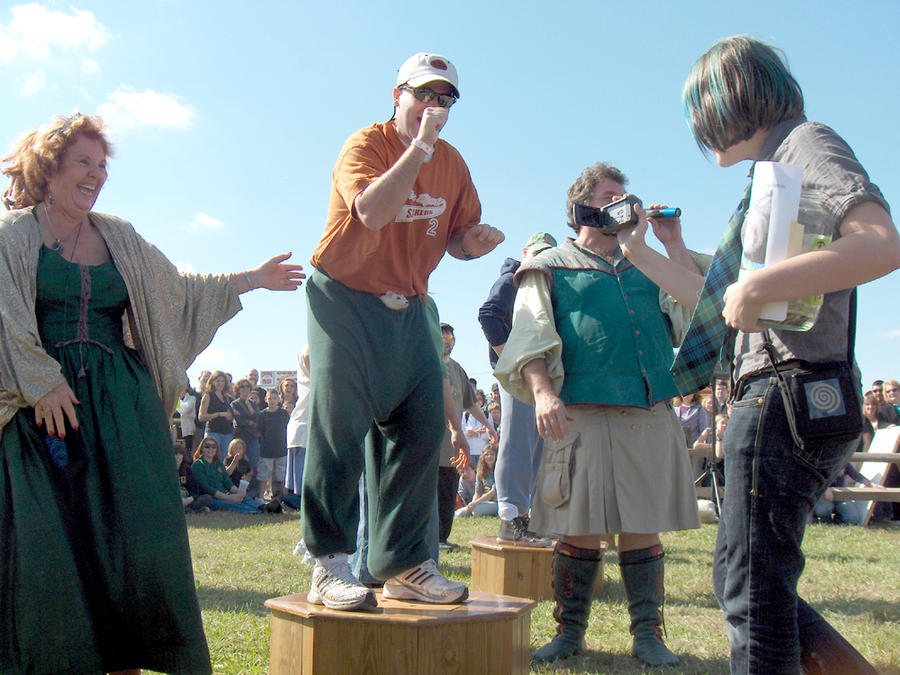

Ferret-legging was an endurance test or stunt in which ferrets were trapped in trousers worn by a participant. Also known as put'em down and ferret-down-trousers, it seems to have been popular among coal miners in Yorkshire, England. Contestants put live ferrets inside their trousers; the winner is the one who is the last to release the animals.
It is believed that ferret-legging may have originated during the time when only the relatively wealthy in England were allowed to keep animals used for hunting, forcing poachers to hide their illicit ferrets in their trousers. Following a brief resurgence in popularity during the 1970s, it has been described as a "dying sport", although a national ferret-legging event was held in Richmond, Virginia, US from 2003 to 2009.
In the sport of ferret-legging, competitors tie their trousers at the ankles before placing two ferrets inside and securely fastening their belts to prevent the ferrets from escaping. Each competitor then stands in front of the judges for as long as he can. The winner is the person who lasts the longest. The sport is said to involve very little "native skill", simply an ability to "have your tool bitten and not care". The former world champion, Reg Mellor, is credited with instituting the practice of wearing white trousers in ferret-legging matches, to better display the blood from the wounds caused by the animals. Competitors can attempt, from outside their trousers, to dislodge the ferrets, but as the animals can maintain a strong hold for long periods, their removal can be difficult.
Obviously, ferret-legging has existed for centuries, but the sport made a brief resurgence in popularity during the 1970s. According to a 2005 report published in the English Northern Echo newspaper, whether due to a "lack of brave contestants or complaining wives", ferret-legging is now "a dying sport" that is being replaced by ferret racing, in which the animals race through a plastic pipe. Main rules for ferret-legging are:
Some people take ferret-legging verty seriously. In 1977, Edward Simpkins from the Isle of Wight set the new world record of five hours and ten minutes, although he only had one ferret in his trousers during the first four hours and two for the last seventy minutes. Simpkins sustained two large bites during his record-breaking attempt, but continued to play a game of darts undeterred. Retired miner Reg Mellor, from Barnsley, set the new world record time of five hours and twenty-six minutes on 5 July 1981 at the Annual Pennine Show at Holmfirth, Yorkshire.